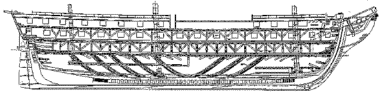
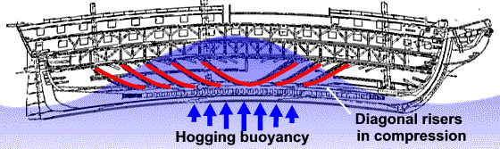
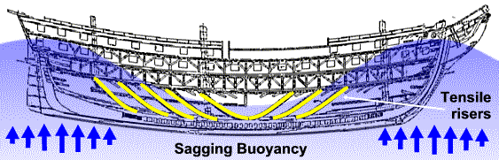
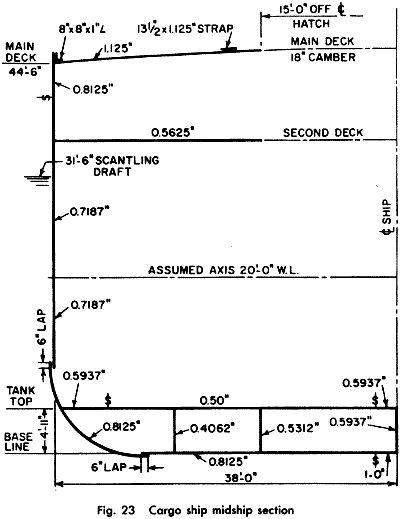

COPYRIGHT Tim Lovett © Mar 2004
.
.
.
SKELETON OR EXOSKELETON?
There are two completely different ways to build an enclosed rigid body. One option is the internal truss-frame that acts as a rigid support to which the skin is attached. The alternative is like the crayfish, where the rigid outer shell carries the load and supports the internal bits and pieces. It is also possible to combine both methods (hybrid). The majority of ancient shipwrights began their hulls by laying the planking first, and then adding the internal framework. This is exactly the opposite to the European timber ships of more recent history, in which the relatively thin planking was attached to a strong frame.
TRUSS FRAME STRUCTURE
The structure of the European timber ship is quite familiar. A keel is laid, then ribs assembled and the hull form takes shape. Finally the planking is attached to the framework. Trusses and internal framing are seen today in the construction of houses and buildings.

USS Constitution The oldest commissioned ship in the world, "Old Ironsides" was an all-timber frigate that remained undefeated in battles with English navy vessels. Built in 1797, some 20% of the timbers are still in service more than 200 years later. Hogging is the enemy of a large timber hull, where flex can generate leakage between planks. Joshua Humphreys, a Philadelphia Quaker and an innovative naval architect designed the strong but streamlined hull using diagonal risers, clearly seen in the cross section above. The 12" x 24" risers were removed in previous restoration work but the hull suffered 13 inches of hogging. They were replaced in 1992. Upper image public domain courtesy US Navy; http://www.history.navy.mil/constitution/. More information on USS Constitution http://www.ussconstitution.navy.mil/ |
|
HOGGING Under hogging action the risers are in compression, preventing shear forces on the hull planking and the subsequent leakage. Note the deliberate use of compression rather than tension to absorb the troublesome hogging loads. |
 |
|
SAGGING Sagging is a complete reversal of hogging loads, the risers now in tension. Sagging is generally less critical than hogging since the massive keel carries tension better than the deck. |
 |
MONOCOQUE STRUCTURE (Stressed skin)
Modern steel ships are primarily designed as a monocoque structure (French for "single shell"). Likewise aircraft, racing cars, small boats and, increasingly, cars are designed with stresses taken in the skin rather than internal framework or chassis. The advantage is weight saving (aircraft) and cost (ships). The difficulty with monocoque has usually been in the fabrication of complex forms, such as a streamlined fuselage, and effective edge joint detailing. Modern composites and adhesives are employed to take full advantage of the technically superior monocoque design philosophy. The stressed skin design for a rigid enclosed body will always win because section modulus is highest when stresses are the furthest distance from the centre (as a power of two). This is true for both bending and torsion. The superior tensile properties of most engineering materials can lead to buckling as a primary concern in monocoque designs, hence the need for limited internal support - the semi-monocoque body.
A MODERN HULL Calculation of the strength of a modern steel hull in longitudinal bending is based on hull plate thickness and proportions. This is virtually a monocoque approximation. (Image: Principles of Naval Architecture SNAME, )
An example section modulus calculation based on a 19,000 tonne cargo vessel. 528.5 x 76 x 44.5 ft. (161 x 23 x 13.6 m). The calculated Total Moment of inertia is 1078744 in2 ft2, with a Section Modulus of 53323 in2 ft. Assuming a certain allowable stress in the steel plate, this can be linked to the bending moment by the simple relation;
Stress = Bending Moment / Section Modulus
Note: Shear in the side walls is not a serious problem in steel because it acts as one piece.
|
 |
COMPARING HULL STRUCTURAL SCHEMES
| Truss Frame | Stressed Skin | Hybrid Truss / Skin | |
|
Alternate names |
Space frame Skeleton, Chassis |
Monocoque (Single shell) Exoskeleton, box girder |
Semi-monocoque |
|
Ark construction difficulties |
Joining large timbers |
Precise planking in quantity |
Bit of both |
|
Stress problems |
Connections between large timbers is difficult, esp for alternating tension and compression |
Smooth stress transfer through curves such as bilge radius, bow and stern. Buckling risk in skin under compression. |
Internal frame aids load transfer and constrains skin from buckling. Skin to frame connection is critical. |
|
Economy of materials |
Additional metal needed to reinforce structural joints. |
Requires increased skin thickness to control buckling. |
The internal framework necessary for decks also supports the skin. |
|
Interior space |
Diagonal bracing restrictive |
Extremely open, but interior deck supports still required. |
Judicious positioning of framework would coincide with internal rooms and deck supports |
|
Leakage |
Risk of thin planking |
Excellent water resistance of multi-layers especially combined with pitch coating during assembly |
Same as stressed skin |
|
Torsion |
Longitudinal trusses become a space frame - requiring very complex joints |
Inherent torsional strength of box girder - provided the window does not compromise shear capacity of the roof. This is a bit tricky since the windows perforate the continuous skin of the roof. |
Same as stressed skin, but utilizing the framework to transfer shear loads across the roof window. |
|
Hull Shape |
Tending to rectangular shape - high block coefficient ('blocky') |
Optimum strength as cross-section approaches a circle, making bow and stern moulding rather tricky since compound curvature could exist. |
Generally rectangular with added curvature - esp in bow and stern. |
CONCLUSION
As an general design philosophy, the hybrid or semi-monocoque hull appears to be the best choice. While a successful hull could probably be built in any of the three methods, the hybrid design would be more efficient. To construct the hull, Noah must use either a large amount of metal reinforcement in a truss-frame structure, or utilize piles of high quality sawn planking. However, good planking is essential for successful sealing anyway, so the requirement for precise lumber processing is unavoidable. This points quite strongly to a semi-monocoque hull design.
{kind=link}